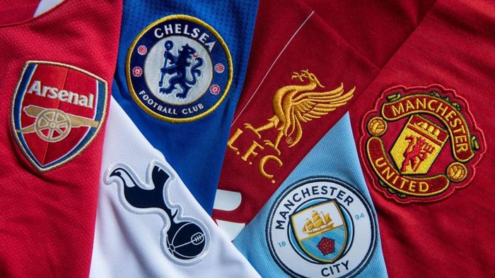
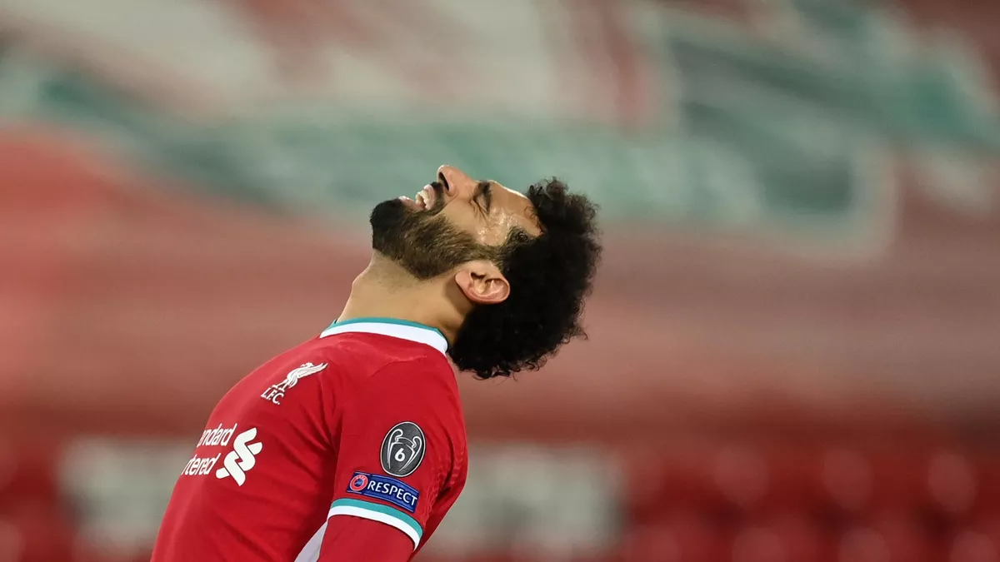
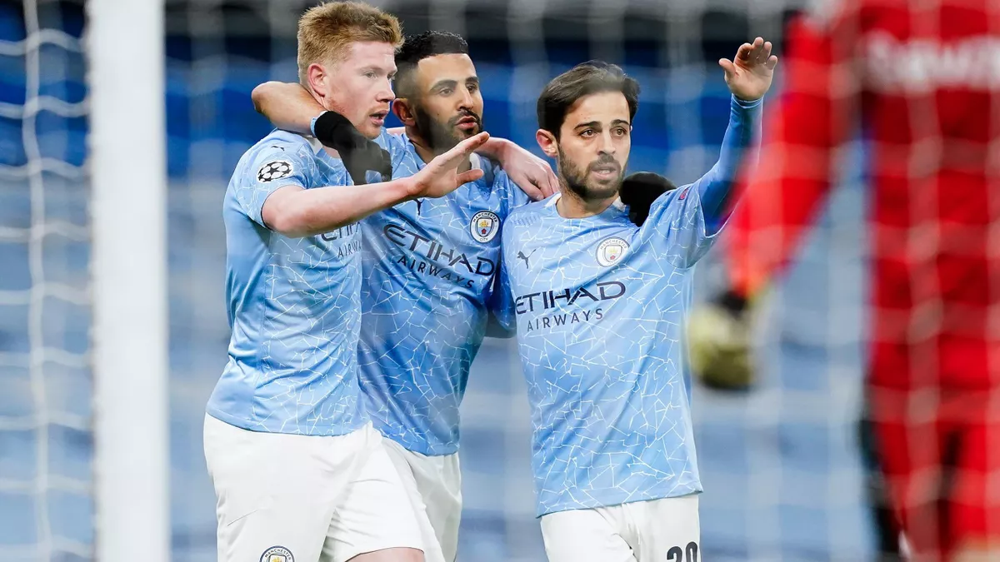
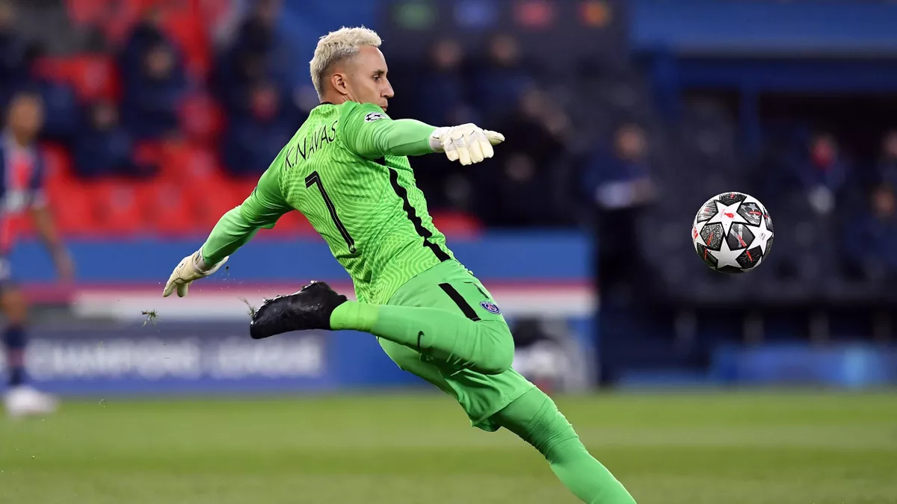
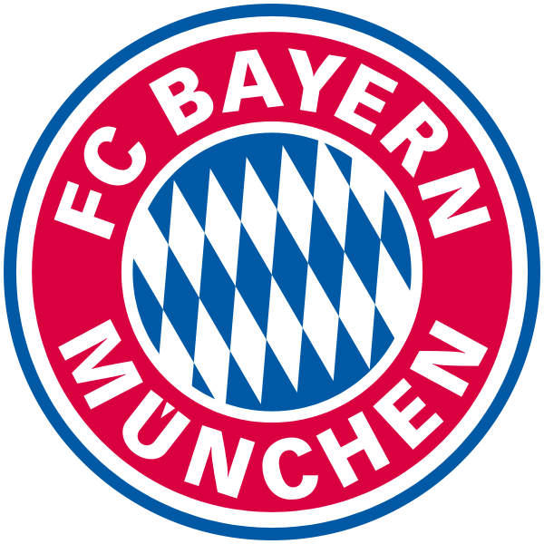
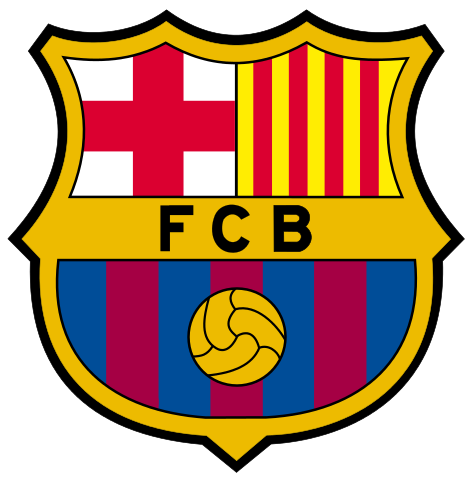

12 ТОП-КЛУБОВ ЕВРОПЫ ОФИЦИАЛЬНО ОБЪЯВИЛИ О СОЗДАНИИ СУПЕРЛИГИ.
12 топ-клубов Европы ночью с 18 на 19 апреля официально объявили о создании Суперлиги – нового футбольного турнира.
«12 ведущих команд Европы сегодня совместно пришли к договоренности о создании нового турнира – Европейской Суперлиги. Матчи будут проводиться среди недели, руководить турниром будут клубы-основатели. «Милан», «Арсенал», «Атлетико», «Челси», «Барселона», «Интер», «Ювентус», «Ливерпуль», «Манчестер Сити», «Манчестер Юнайтед», «Реал» и «Тоттенхэм» войдут в Суперлигу как клубы-основатели. Еще три команды присоединятся к ней перед началом первого сезона, старт которого состоится тогда, когда это будет возможным.
Клубы-основатели планируют обсудить с УЕФА и ФИФА совместное сотрудничество, чтобы обеспечить наилучшие перспективы как для нового турнира, так и для футбола в целом. Образование Суперлиги происходит в период, когда пандемия ускорила неустойчивость существующей в европейском футболе экономической модели. Кроме того, клубы-основатели уже несколько лет ставили перед собой цель повысить качество и плотность существующих европейских соревнований каждый сезон, а также создать формат, в котором ведущие команды и футболисты будут соревноваться друг с другом на регулярной основе.
«ЛИВЕРПУЛЬ» ВТОРОЙ ГОД ПОДРЯД НЕ ПОПАЛ В ПОЛУФИНАЛ ЛИГИ ЧЕМПИОНОВ.
Болельщики «Ливерпуля» после стольких лет без побед только-только привыкли, что Юрген Клопп вернул их на вершину, как нужно обратно спускаться на землю. Восхождение скаузеров в топ АПЛ и ЛЧ было плавным и нежным, но в этом сезоне на «Энфилде» снова не увидят трофеев.
В позапрошлом сезоне «красные» казались прессинг-машиной, выстроенной по многолетним и привезенным из Дортмунда чертежам Клоппа – результатом стал Кубок чемпионов. В прошлом году мотивации Юргена хватило, чтобы прошагать Премьер-лигу без сбоев и впервые за 30 лет стали королями Англии. Из ЛЧ мерсисайдцы вылетели еще на 1/8 финала, но тогда фаны махнули рукой – напротив стоял «Атлетико» Диего Симеоне, а национальный титул был важнее из-за долгого ожидания.
Теперь же «Ливерпуль» попал в серьезный кризис. После первого места в чемпионате-2019/20 Клопп борется за попадание в топ-4, и пока «Вест Хэм» с «Лестером» выглядят более серьезными претендентами, чем страшная система немецкого харизматика с белоснежными зубами. Вполне возможно, что вместо «Аталанты» и «Лейпцига» «красных» в Европе встретят красавчики из Болгарии, Чехии и прочие амбассадоры ЛЕ.
БОРУССИЯ ДОРТМУНД – МАНЧЕСТЕР СИТИ, ЧЕТВЕРТЬФИНАЛ ЛИГИ ЧЕМПИОНОВ
12 топ-клубов Европы ночью с 18 на 19 апреля официально объявили о создании Суперлиги – нового футбольного турнира.
«12 ведущих команд Европы сегодня совместно пришли к договоренности о создании нового турнира – Европейской Суперлиги. Матчи будут проводиться среди недели, руководить турниром будут клубы-основатели. «Милан», «Арсенал», «Атлетико», «Челси», «Барселона», «Интер», «Ювентус», «Ливерпуль», «Манчестер Сити», «Манчестер Юнайтед», «Реал» и «Тоттенхэм» войдут в Суперлигу как клубы-основатели. Еще три команды присоединятся к ней перед началом первого сезона, старт которого состоится тогда, когда это будет возможным.
Клубы-основатели планируют обсудить с УЕФА и ФИФА совместное сотрудничество, чтобы обеспечить наилучшие перспективы как для нового турнира, так и для футбола в целом. Образование Суперлиги происходит в период, когда пандемия ускорила неустойчивость существующей в европейском футболе экономической модели. Кроме того, клубы-основатели уже несколько лет ставили перед собой цель повысить качество и плотность существующих европейских соревнований каждый сезон, а также создать формат, в котором ведущие команды и футболисты будут соревноваться друг с другом на регулярной основе.
ВРАТАРЬ «ПСЖ» КЕЙЛОР НАВАС НИКОГДА НЕ ВЫЛЕТАЛ ИЗ ПЛЕЙ-ОФФ ЛИГИ ЧЕМПИОНОВ
12 топ-клубов Европы ночью с 18 на 19 апреля официально объявили о создании Суперлиги – нового футбольного турнира.
«12 ведущих команд Европы сегодня совместно пришли к договоренности о создании нового турнира – Европейской Суперлиги. Матчи будут проводиться среди недели, руководить турниром будут клубы-основатели. «Милан», «Арсенал», «Атлетико», «Челси», «Барселона», «Интер», «Ювентус», «Ливерпуль», «Манчестер Сити», «Манчестер Юнайтед», «Реал» и «Тоттенхэм» войдут в Суперлигу как клубы-основатели. Еще три команды присоединятся к ней перед началом первого сезона, старт которого состоится тогда, когда это будет возможным.
Клубы-основатели планируют обсудить с УЕФА и ФИФА совместное сотрудничество, чтобы обеспечить наилучшие перспективы как для нового турнира, так и для футбола в целом. Образование Суперлиги происходит в период, когда пандемия ускорила неустойчивость существующей в европейском футболе экономической модели. Кроме того, клубы-основатели уже несколько лет ставили перед собой цель повысить качество и плотность существующих европейских соревнований каждый сезон, а также создать формат, в котором ведущие команды и футболисты будут соревноваться друг с другом на регулярной основе.
Победители Лиги Чемпионов (2013-2018)
-
2013
 2014
2015

2016
2017
2018